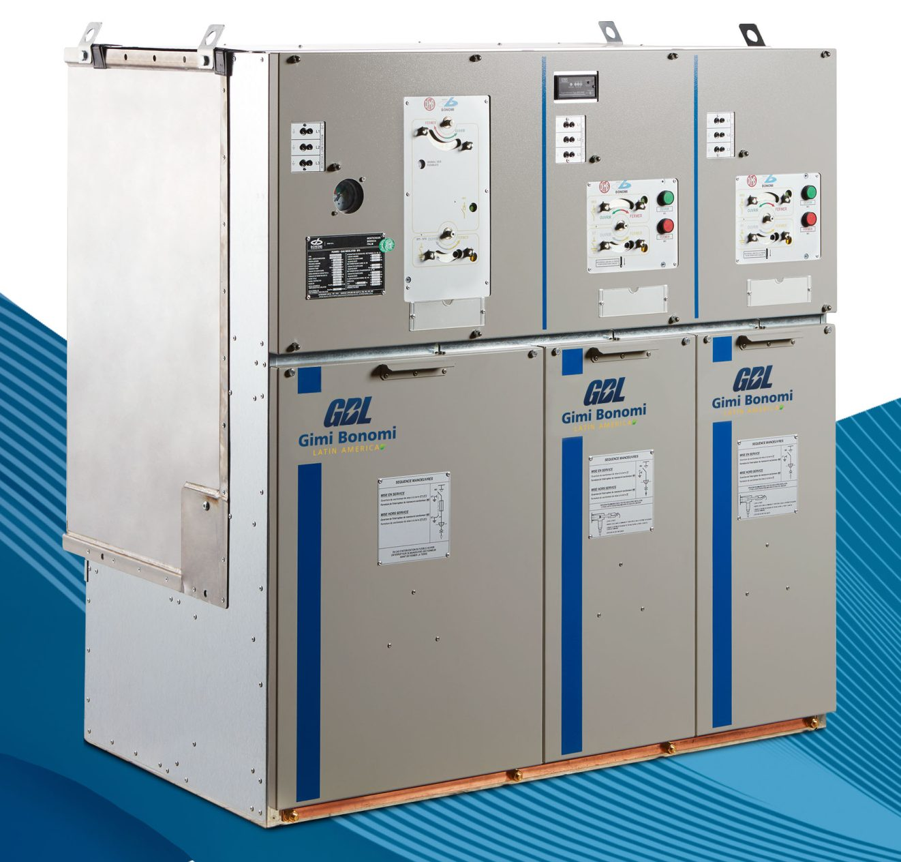

GB-RING
Conjunto de manobra e comando de distribuição secundária integralmente em SF6 ou SF6 FREE, de tensão até 36KV, desenvolvidos para atender as mais diversas aplicações, desde ambientes industriais até parques de geração eólica e fotovoltaica, além de distribuição de energia no conceito Smart Grid.
Fabricante: GIMI Bonomi
- Tensão nominal
- 24 | 36 kV
- Corrente nominal em serviço contínuo
- 630 | 630 A
- Corrente suportável nominal de curta duração
- 20 | 20 kA
- Grau de proteção
- IP30 | IP30
Conjunto de manobra e comando de distribuição secundária integralmente em SF6 ou SF6 FREE, de tensão até 36KV, desenvolvidos para atender as mais diversas aplicações, desde ambientes industriais até parques de geração eólica e fotovoltaica, além de distribuição de energia no conceito Smart Grid.
Cubículos integralmente isolados em SF6 até 36kV
A nova série de RMU da Gimi Bonomi Latin America foi projetada para satisfazer a todas as exigências de distribuição secundária de média tensão até 36 kV.
Desenvolvemos quadros com isolamento a gás ideais para uma ampla variedade de aplicações, desde diferentes requisitos industriais até a geração e distribuição de energia.
MECANISMO DE FUNCIONAMENTO: O mecanismo é composto por uma alavanca de comando que permite mover nas três posições: aberto/fechado/terra, e por um seletor utilizado para a seleção das posições aberto/fechado.
O mecanismo incorpora bloqueios mecânicos e cadeados para melhorar a segurança operacional. Não sendo possível fechar simultaneamente o interruptor (IMS) e a seccionadora de terra.
O MECANISMO ANTIRREFLEXO possibilita um tempo suficiente ao interruptor principal (montante) para intervir e eliminar uma falha.
RESISTÊNCIA AO ARCO INTERNO: As cubas de aço inoxidável isoladas com gás SF6 são completamente resistentes ao arco interno de forma a garantir a máxima segurança do operador em caso de falhas internas.
INDICADOR DE PRESSÃO DO GÁS: Um indicador de pressão do gás tem setores verdes e vermelhos para indicar a pressão mínima admissível para um funcionamento seguro; Um alarme à distância opcional de pressão do gás pode ser eventualmente adicionado para avisar o operador caso essa pressão desça abaixo do limite operacional admissível; O manômetro compensado em temperatura está disponível como opcional.
LIGAÇÃO A TERRA E TESTE: A ligação à terra dos cabos e verificação é uma função do IMS utilizada para testar o isolamento dos cabos e para localizar as falhas no circuito sem que seja necessário remover os cabos principais do seu compartimento, melhorando a segurança do operador. O painel de acesso para a prova dos cabos fica completamente bloqueado e não pode ser aberto até que o IMS esteja na posição de ligação à terra.
COMPARTIMENTO DOS CABOS: Para uma maior segurança do operador, os compartimentos dos cabos são ligados à terra e ficam completamente bloqueados, permitindo o acesso do operador somente se o IMS estiver na posição Terra.
PONTO DE LIGAÇÃO À TERRA NO COMPARTIMENTO DOS CABOS (OPCIONAL): Um ponto de terra é fixado no interior do compartimento dos cabos, situado no fundo da unidade. É utilizado para a conexão ao sistema de ligação à terra principal.
CARACTERÍSTICAS GERAIS E NORMAS DE REFERÊNCIA: Os quadros RMU da Gimi Bonomi Latin America, isolados a gás SF6, permitem a conexão, a alimentação e a proteção dos transformadores para redes em anel abertas ou radiais.
A proteção dos transformadores pode ser obtida: Com uma combinação de fusíveis e IMS para transformadores até 2.000 kVA. Através de um disjuntor com um relé de proteção para transformadores até 8.000 kVA.
Graças a uma proteção de linha com interruptores de 630A, na comutação de rede por meio de disjuntores e com dispositivos integrados de controle remoto da alimentação, os nossos RMU’s permitem diferentes conexões.
GIMI BONOMI tem Câmara de Manobra homologada pela Neoenergia – GB RING, referência em segurança e eficiência para média tensão, agora integra o portfólio de soluções homologadas por uma das maiores distribuidoras do país.
Projetado para atender às demandas de usinas fotovoltaicas, eólicas, subestações e grandes indústrias, o GB RING oferece: seccionamento seguro e confiável; proteção avançada através de disjuntores e fusíveis; controle inteligente com possibilidade de operação remota; instalação rápida e eficiente, mesmo em ambientes de alta exigência.
Características
- SEGURANÇA: Resistente ao arco interno AFL
- Todas as peças sob tensão estão alojadas em um reservatório de gás com fechamento hermético selado para a vida
- Bloqueios mecânicos/elétricos para evitar operações indevidas
- Indicadores de presença de tensão
- CONFIABILIDADE: Isolamento completo com vedação por toda a vida útil
- Teste de rotina de fábrica em 100% das unidades
- Todos os ensaios de tipo em conformidade com as mais rigorosas exigências mundiais
- EFICIÊNCIA: Design modular extensível em ambos os lados
- Fácil acesso frontal para a instalação e testes
- Cabos e fusíveis de média tensão
- Tamanho compacto e leve
- DESIGN: 1 - Conexão de barramento; 2 - Reservatório de gás (cuba); 3 - Base; 4 - Compartimento de comando; 5 - Luzes indicadoras de presença de tensão; 6 - Compartimentos dos cabos
Ficha técnica
Dados técnicos
- Invólucro
- Invólucro de metal, barramento simples
- Uso
- Para uso interno ou externo (com uso de cobertura)
- Temperatura ambiente
- Padrão de – 15 °C a + 40 °C
- Perda de continuidade do serviço
- LSC 2B
- Classe de compartimentação
- PM
- Frequência nominal
- 50/60 Hz
Interruptor de manobra seccionador (IMS) de linha – 24 kV | 36 kV
- Tensão nominal – Ur
- 24 | 36 kV
- Tensão nominal de Impulso atmosférico da fase terra – Up
- 125 | 170 kV
- Tensão nominal de impulso atmosférico da distância de seccionamento – Up
- 145 | 195 kV
- Tensão nominal de isolamento à frequência industrial 1 min. – Ud
- 50 | 70 kV
- Tensão nominal de isolamento à frequência industrial 1 min. de distância do seccionamento – Ud
- 60 | 80 kV
- Frequência nominal – fr
- 50/60 | 50/60 Hz
- Corrente nominal em serviço contínuo – Ir
- 630 | 630 A
- Corrente suportável nominal de curta duração – Ik
- 20 | 20 kA
- Valor de crista da corrente suportável de curta duração – Ip
- 52 | 52 kA
- Duração do tempo de curto circuito – tk (s)
- 1 | 1
- Grau de proteção
- IP30 | IP30
- Corrente de interrupção da carga ativa - Iload
- 630 | 630 A
- Corrente de interrupção a anel aberto - Iloop
- 630 | 630 A
- Corrente de interrupção da linha de vácuo - Ilc
- 13 | 13 A
- Corrente de interrupção dos cabos de vácuo - Icc
- 40 | 40 A
- Classe de operação mecânica
- M1 | M1
- Classe de operação elétrica
- E3 | E3
- Capacidade de fechamento em curto-circuito (making)
- 52 | 52 kA
- Proteção ao arco interno – IAC
- 20 | 20 kA
- Duração do arco interno (s)
- 1 | 1
Características do disjuntor em vácuo integrado (I) – 24 | 36 kVrms
- Corrente de curta duração 1 seg. (kArms/peak)
- 20 | 20
- Poder de estabelecimento (kApeak)
- 50 | 50
- Capacidade de interrupção – Carga ativa
- 630 | 630 A
- Capacidade de interrupção – Linhas a vácuo
- 10 | 10 A
- Capacidade de interrupção – Cabos a vácuo
- 31,5 | 31,5 A
- First pole to clear factor
- 1,5 | 1,5
- Intervalo
- < = 80ms | < = 80ms
- Caracteristicas elétricas
- E2-C2-S2 | E2
- Sequência de manobra
- O-0,3 seg-CO-30 15 seg-CO | O-0,3 seg-CO-30 15 seg-CO
- Vida mecânica
- 10000-M2 | 2000-M1
Seccionadora de terra da linha ST1 – 24 | 36 kVrms
- Corrente admissível de curta duração Ik
- 20 | 20 kA
- Valor de pico da corrente de curta duração Ip
- 52 | 52 kA
- Duração do tempo de curto circuito - tk (s)
- 1 | 1
- Capacidade de fechamento em curto circuito (making)
- 52 | 52 kA
- Classe da operação mecânica
- M0 | M0
- Classe operação elétrica
- E2 | E2
Seccionadora de terra de proteção do transformador ST2 – 24 | 36 kVrms
- Corrente admissível de curta duração
- 1 | 1 kA
- Valor de pico da corrente de curta duração
- 2,6 | 2,6 kA
- Duração do tempo de curto circuito tk (s)
- 1 | 1
- Capacidade de fechamento em curto circuito (making)
- 2,6 | 2,6 kA
- Classe da operação mecânica
- M0 | M0
- Classe da operação elétrica
- E2 | E2
Unidades - dimensões - pesos – Módulo: Altura / Largura / Profundidade (mm) / Peso (kg)
- Altura (todos os módulos SF6)
- 1666
- Profundidade (todos os módulos SF6)
- 762,5 / 862,5
- L 24kV / L 36kV
- Largura 381 | Peso 180 / 190
- I 24kV
- Largura 450 | Peso 210
- 2I+1T 24kV
- Largura 1450 | Peso 645
- T 24kV / T 36kV
- Largura 521 / 601 | Peso 236 / 266
- 2L+T 24kV / 2L+T 36kV
- Largura 1271 / 1351 | Peso 513 / 540
- 2L+2T 36kV
- Largura 1948 | Peso 780
- 3L+T 36kV
- Largura 1726 | Peso 481
- 4L+T 36kV
- Largura 2100 | Peso 720
- 3L 24kV
- Largura 1130 | Peso 460
- 4L 24kV
- Largura 1406 | Peso 610
- I 36kV
- Largura 500 | Peso 290
Unidades
- Unidade modular de entrada e saída (LE)
- A unidade de linha (L) é utilizada principalmente como uma unidade de chegada, a anel ou de derivação. A unidade padrão é provida de um IMS de 3 posições. O acesso ao cubículo dos cabos é possível com a IMS na posição “terra”. A unidade pode ser dotada de comando motorizado ou manual.
- Unidade modular de manobra de transformador (T)
- Unidade composta pelo módulo de proteção do transformador extensível em ambos os lados. O módulo do transformador (T) é utilizado quando for necessária uma unidade de seccionamento com proteção dos fusíveis. A unidade do transformador (T) pode ser equipada com bobina de abertura no IMS. Para a ligação à terra dos fusíveis, a seccionadora de terra integrada atua no lado a montante, enquanto uma seccionadora de terra adicional atua no lado a jusante dos fusíveis.
- Unidade de partida/chegada com unidade de proteção do trafo com fusíveis (2L+T)
- Unidade composta pelo módulo de proteção do transformador (T) e duas unidades de partida/chegada (L). (HOMOLOGADO ENEL)
- Unidade de partida/chegada com unidade de proteção de transformador com fusíveis + extensão lateral (2L+T)e
- Unidade composta pelo módulo de proteção do transformador (T) e duas unidades de partida/chegada (L). Graças à conexão lateral, em ambos os lados, a unidade pode ser acoplada a outras unidades da família RMU.
- Unidade de partida/chegada com unidade do interruptor de proteção do trafo (2L+I)
- Unidade composta por duas unidades de partida/chegada (L) e um módulo de proteção do transformador com disjuntor (I).
- Unidade do interruptor modular (IE)
- A unidade individual de partida/chegada com disjuntor pode ser acoplada aos módulos individuais da família RMU como a unidade de linha e/ou a unidade de proteção do transformador compondo um arranjo elétrico em função das mais variadas exigências dos nossos clientes.
Isoladores de passagem com sensor (ISCT 24I / ISCT 36I) – dados técnicos
- Tensão máx. Um
- 36kV
- Nível de isolamento
- 24/50/125/170 kV
- Frequência nominal
- 50/60
- Sensor de tensão LPVT
- Padrão aplicável IEC 61869-11; Tensão máx. Um: 36 kV; Tensão Primária Upr: 36/r3 kV; Relação de transformação Kr: 10.000:1; Classe de precisão: 0,5 / 1P; Dispositivo de carga nominal: ≥ 2 MΩ ≤ 50 pF; Fator de tensão nominal Fv: 1.9/8 h
- Sensor de corrente LPCT
- Padrão aplicável IEC 61869-10; Corrente nominal: 630A; Corrente primária: 500A; Relação de transformação Kr: 500A 150 mV @ 50 Hz 180 mV @ 60 Hz; Classe de precisão: 0,5 / 5P40; Dispositivo de carga nominal: ≥ 20 KΩ ≤ 500 pF; Fator de corrente primária extensível Kpcr: 40
Acessórios de junção
- Sistema de junção
- O nosso sistema completo permite a junção de dois quadros tipo RMU até 36kV e 630A. Ao cliente, é fornecido todo o material de instalação necessário, incluindo os contatos internos à junta com Icc de 20kA.
- Bicone com fechamento e ANEL de segurança
- Tensão máxima de operação Um (kV): 24/36 | Corrente nominal In (A): 630 | Icc (kA): 20 | Peso: -
- Tampa de silicone
- Tensão máxima de operação (kV): 24/36 | Peso: -
Características técnicas – linha GB RING tipo RMU
- Cubículo
- 24kV e 36kV;
- Altura
- 1.666mm;
- NBI
- 125kV – 170kV;
- Corrente nominal
- 630A;
- Grau de proteção
- IP 30 e IP-54;
- Corrente suportável de curto circuito e arco interno
- 20kA/1s;
- Valor de crista da corrente suportável nominal de curta duração
- 52kA;
- Tensão suportável de frequência industrial (50-60Hz/1min) à terra e entre fases
- 50kV - 70kV;
- Norma
- Em conformidade com a NBR - IEC - 62271-200;
- Resistente ao arco interno
- IAC-A-FLR-20kA/1s.
Aplicações
- ENERGIA. Geração: energia eólica, energia solar fotovoltaica
- Distribuição. subestações compactas, proteção da rede dos RMU’s
- Redes subterrâneas
- Subestação de transformação de grande porte
- Subestação de MT Smart Grid
- INFRAESTRUTURA. Túneis, aeroportos, portos marítimos e fluviais, estações de metrô, ferrovias urbanas
- BUILDING. Edifícios comerciais: hospitais, shoppings centers, hotéis, prédios comerciais, data center, escolas
- Edifícios residenciais
- INDÚSTRIAS. Saneamento: Água e efluentes
- Mineração
- Automobilística
- Siderúrgicas
- Cimenteiras
- Indústrias petroquímicas
Normas de referência
- PADRÃO IEC: IEC 62271-1
- IEC 62271-100
- IEC 62271-102
- IEC 62271-103
- IEC 62271-105
- IEC 62271-200
- PADRÃO ENEL: GSM001
- NBR - IEC - 62271-200
- IEC 61243-5 (VDS)
- IEC 62271-206 (VPIS)
- IEC 61869-10 (2018) e IEC 61869-11 (2018) (sensores)
Informações técnicas do fabricante GIMI Bonomi. Confirme os valores para o seu projeto com a nossa equipe.